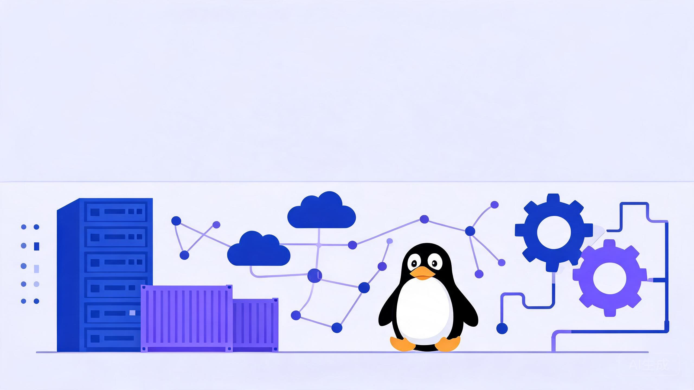

先看原则，再动手 —— 顺序比速度重要。
| 阶段 | 技能 | 优先级 | 学习目标 |
|---|---|---|---|
| 一 · 打基础 | 1. Linux | 必备 | 文件、进程、权限、磁盘、日志、服务都能独立操作 |
| 2. 计算机网络 | 必备 | IP、DNS、TCP、HTTP、端口、路由、防火墙必须搞懂 | |
| 3. Shell | 必备 | 让重复工作自动化，效率提升的第一步 | |
| 4. MySQL | 建议掌握 | SQL、索引、锁、备份恢复与常见故障排查 | |
| 二 · 实战 | 5. Nginx | 建议掌握 | 反向代理、负载均衡、HTTPS、日志 |
| 6. Git | 建议掌握 | 代码和配置管理的基础工具 | |
| 7. Docker | 强烈建议 | 理解镜像、容器、网络、存储四大概念 | |
| 8. 监控与日志 | 必备 | 问题发生前有感知，发生后能定位 | |
| 三 · 高级进阶 | 9. Ansible | 建议掌握 | 批量执行、配置和部署 |
| 10. CI/CD | 建议掌握 | 代码从提交到发布逐步自动化 | |
| 11. Kubernetes | 进阶必学 | 云原生时代的重要技能 | |
| 12. Redis / MQ | 中级学习 | 掌握缓存、消息队列以及常见故障 | |
| 四 · 提升竞争力 | 13. 云计算 | 进阶学习 | ECS、VPC、SLB、OSS、CDN、WAF 等 |
| 14. Python 自动化 + AI 运维 | 未来核心 | 从手工处理走向自动分析、自动执行 |
标准节奏总计约 26 周；如果你能脱产学习，可以压缩到文末的 90 天冲刺计划。无论哪种节奏，每个技能都必须伴随动手实验。
# 文件与权限 ls -lh # 查看文件（-h 人类可读） chmod 755 app.sh # rwxr-xr-x：所有者可读写执行，其他人只读执行 chown nginx:nginx /var/www # 改属主属组 # 进程与资源 ps aux --sort=-%mem | head # 找出最吃内存的进程 top -Hp <pid> # 查看进程内的线程 kill -9 <pid> # 强制结束（最后手段） df -h && du -sh /var/* # 磁盘整体占用 → 逐目录定位 free -h # 内存使用 # 服务与日志 systemctl status nginx # 查看服务状态 systemctl enable --now nginx # 开机自启并立即启动 journalctl -u nginx -n 100 # 查看服务最近 100 行日志 tail -f /var/log/messages # 实时跟踪系统日志 # 网络定位 ss -tlnp | grep 80 # 谁在监听 80 端口
ops，配置 sudo 免密，并禁止 root 直接 SSH 登录。/etc/fstab 实现开机自动挂载。du 找到大文件，清理日志，并配置 logrotate 自动切割。top 找到占用最高的 PID；② top -Hp PID 定位到具体线程；③ Java 程序用 jstack 抓取线程栈，把线程 ID 转成 16 进制去栈里找对应代码；④ 结合日志判断是业务高峰、死循环还是攻击，给出限流/扩容/修复方案。回答时强调「先止血（重启/限流），再定位根因」。# 连通性与路径 ping -c 4 10.0.0.1 traceroute www.baidu.com # 看数据包经过的每一跳 # DNS 排查 dig www.baidu.com # 或 nslookup，看解析到哪个 IP # HTTP 层排查（运维最常用） curl -Iv https://example.com # 看 TCP/TLS/HTTP 全过程与响应头 curl -w "@curl-format.txt" # 分段计时：DNS/连接/首字节耗时 # 端口与连接 ss -tlnp # 本机监听端口 ss -s # 连接统计（发现 TIME_WAIT 堆积） nc -zv 10.0.0.2 3306 # 测对方端口通不通 # 抓包（终极武器） tcpdump -i eth0 port 80 -nn -c 20
tcpdump 抓一次完整的 HTTP 请求，用 Wireshark 打开，找到三次握手、HTTP 请求/响应、四次挥手。/etc/resolv.conf 改错，模拟 DNS 故障，练习用「ping IP 通、ping 域名不通」的现象定位。net.ipv4.tcp_tw_reuse、调大端口范围 ip_local_port_range；③ 排查是否有短连接疯狂建连的异常调用方。#!/bin/bash # 清理 7 天前的日志，磁盘超过 80% 时告警 LOG_DIR=/var/log/myapp DAYS=7 THRESHOLD=80 find $LOG_DIR -name "*.log" -mtime +$DAYS -delete echo "$(date '+%F %T') cleaned logs older than $DAYS days" >> /var/log/cleanup.log usage=$(df / | awk 'NR==2 {print $5}' | tr -d '%') if [ "$usage" -gt "$THRESHOLD" ]; then echo "WARNING: disk usage ${usage}% on $(hostname)" | \ mail -s "Disk Alert" ops@example.com fi
# 配合 cron 每天凌晨 2 点执行 0 2 * * * /opt/scripts/clean_log.sh # 文本处理经典组合：统计 Nginx 访问最多的 10 个 IP awk '{print $1}' access.log | sort | uniq -c | sort -rn | head -10
awk '{print $1}' access.log | sort | uniq -c | sort -rn | head -10。思路：awk 提取 IP 列 → sort 排序让相同 IP 相邻 → uniq -c 去重计数 → sort -rn 按次数倒序 → head 取前 10。这道题考的是管道组合思维。*/5 * * * * 是什么意思？注意什么坑？crontab -l 确认生效。bash -x script.sh 打印每条命令及展开结果，最常用；② 脚本开头加 set -euo pipefail 让错误立即暴露；③ 关键节点加 echo 或写日志；④ 用 shellcheck 做静态检查。-- 基础 SQL SELECT user, host FROM mysql.user; UPDATE user SET status=1 WHERE id=20; CREATE INDEX idx_name ON user(name); -- 建索引 -- 定位慢 SQL SHOW VARIABLES LIKE 'slow_query%'; EXPLAIN SELECT * FROM orders WHERE user_id=100; -- 看是否走索引 SHOW PROCESSLIST; -- 当前正在执行的 SQL，抓锁等待现场
# 备份与恢复（运维必会） mysqldump -uroot -p --single-transaction dbname > dbname_$(date +%F).sql mysql -uroot -p dbname < dbname_2026-11-06.sql # 恢复演练 # 误删数据后的救命稻草：binlog 时间点恢复 mysqlbinlog --start-datetime="2026-11-06 10:00:00" \ --stop-datetime="2026-11-06 10:30:00" binlog.000001 | mysql -uroot -p
mysqldumpslow 找出最慢的 5 条 SQL 并用 EXPLAIN 分析。SHOW SLAVE STATUS 中的 Seconds_Behind_Master。WHERE DATE(create_time)=...）；② 隐式类型转换（字符串列用数字查）；③ LIKE '%xx' 前导通配符；④ 违反最左前缀原则；⑤ OR 两侧有一列无索引；⑥ 数据区分度太低时优化器主动放弃索引。Seconds_Behind_Master 和慢日志，判断是大事务、从库硬件差还是单线程回放瓶颈。处理：① 拆分大事务；② 开启并行复制（MySQL 5.7+ 逻辑时钟 / 8.0 WRITESET）；③ 从库配置调优（关闭不必要的刷盘）；④ 架构上用读写分离中间件做延迟感知；⑤ 业务上对实时性要求高的读强制走主库。SHOW PROCESSLIST 看有没有锁等待或堆积；③ 对慢 SQL 用 EXPLAIN 看执行计划；④ 检查机器资源（CPU/IO/内存）与连接数；⑤ 给出方案：加索引、改写 SQL、杀会话、扩容，并评估变更风险。# /etc/nginx/conf.d/app.conf upstream backend { # 默认轮询；可加 weight=2 加权、ip_hash 会话保持、least_conn 最少连接 server 10.0.0.11:8080; server 10.0.0.12:8080; } server { listen 443 ssl; server_name www.example.com; ssl_certificate /etc/nginx/cert/example.com.pem; ssl_certificate_key /etc/nginx/cert/example.com.key; location / { proxy_pass http://backend; proxy_set_header Host $host; proxy_set_header X-Real-IP $remote_addr; } location /static/ { # 动静分离 root /data; expires 7d; } } # 80 强制跳转 443 server { listen 80; server_name www.example.com; return 301 https://$host$request_uri; }
# 改完配置的两板斧：先测语法，再平滑 reload
nginx -t && nginx -s reload
location /api/ { proxy_pass http://backend; }（无斜杠/无 URI）：原始 URI 完整转发，后端收到 /api/xxx。proxy_pass http://backend/;（带斜杠）：location 匹配的前缀被替换，后端收到 /xxx。配置前先想清楚后端期望什么路径。git clone git@gitlab.example.com:ops/deploy.git git checkout -b feature/update-nginx # 新建功能分支 git add nginx.conf git commit -m "feat: 增加限流配置" git push origin feature/update-nginx # 推送后提 MR/PR 评审 # 出错时的后悔药 git reset --soft HEAD~1 # 撤销最近一次提交，改动保留在暂存区 git revert HEAD # 生成一个反向提交，安全回滚（已推送的用这个） git stash && git stash pop # 临时收起未完成的改动
# 最常用的 8 条命令 docker pull nginx:1.25 docker run -d --name web -p 80:80 nginx:1.25 docker ps # 运行中的容器 docker logs -f web # 看日志（排障第一步） docker exec -it web bash # 进入容器 docker stop web && docker rm web docker images docker system df # 看磁盘占用，配合 prune 清理
# Dockerfile 示例：把一个 Python 应用打成镜像 FROM python:3.11-slim WORKDIR /app COPY requirements.txt . RUN pip install --no-cache-dir -r requirements.txt COPY . . EXPOSE 8000 CMD ["python", "app.py"] # 构建与运行 docker build -t myapp:1.0 . docker run -d -p 8000:8000 -v /data:/app/data myapp:1.0
docker logs、docker inspect、exit code 定位原因（OOM？启动命令错误？）。docker ps -a 看退出码（137=被 kill 多为 OOM，1=应用自身错误）；② docker logs 看标准输出日志；③ docker inspect 看 OOMKilled、配置、挂载；④ docker exec 进去手动执行启动命令复现；⑤ 检查资源限制、健康检查、依赖服务是否就绪。# 1. 被监控机器装 node_exporter（暴露主机指标 :9100） # 2. prometheus.yml 配置抓取目标 scrape_configs: - job_name: 'node' static_configs: - targets: ['10.0.0.11:9100'] # 3. 告警规则示例：CPU 连续 5 分钟超 80% - alert: HighCPU expr: 100 - (avg by(instance)(irate(node_cpu_seconds_total{mode="idle"}[5m])) * 100) > 80 for: 5m annotations: summary: "{{ $labels.instance }} CPU 使用率超过 80%"
# 4. Grafana 接入 Prometheus 数据源，导入 ID=1860 的 Node 看板 # 5. 日志侧轻量方案：Promtail 采集 → Loki 存储 → Grafana 查询（比 ELK 省资源）
# inventory.ini：定义主机分组
[web]
10.0.0.11
10.0.0.12
# deploy_nginx.yml
- hosts: web
become: yes
tasks:
- name: 安装 Nginx
yum: name=nginx state=present
- name: 下发配置（模板渲染，变更时触发 reload）
template: src=nginx.conf.j2 dest=/etc/nginx/nginx.conf
notify: reload nginx
- name: 启动并开机自启
service: name=nginx state=started enabled=yes
handlers:
- name: reload nginx
service: name=nginx state=reloaded
# 执行；ad-hoc 场景举例：批量查看所有机器磁盘
ansible-playbook -i inventory.ini deploy_nginx.yml
ansible web -i inventory.ini -m shell -a "df -h"
serial: 2 分批滚动执行，先小流量验证；② --check 预演 + --diff 看变更内容；③ 重要操作加 --limit 先打一台；④ 配合 forks 控制并发避免压垮网络；⑤ 变更前备份配置，保留回滚 Playbook。
flowchart LR
A[代码提交 Git] --> B[自动构建]
B --> C[单元测试 / 代码扫描]
C --> D[打包镜像 推 Harbor]
D --> E[部署测试环境]
E --> F[自动化验收]
F --> G[人工审批]
G --> H[灰度/滚动发布生产]
H --> I[监控验证 自动回滚]
# .gitlab-ci.yml stages: [build, test, deploy] build: stage: build script: - docker build -t harbor.example.com/app/myapp:$CI_COMMIT_SHORT_SHA . - docker push harbor.example.com/app/myapp:$CI_COMMIT_SHORT_SHA test: stage: test script: pytest tests/ deploy_test: stage: deploy script: - kubectl set image deploy/myapp myapp=harbor.example.com/app/myapp:$CI_COMMIT_SHORT_SHA environment: test deploy_prod: stage: deploy script: - kubectl set image deploy/myapp myapp=harbor.example.com/app/myapp:$CI_COMMIT_SHORT_SHA environment: production when: manual # 生产环境手动审批触发
kubectl rollout undo 或重跑旧版本流水线快速恢复。kubectl rollout undo 回到上一 ReplicaSet；传统环境切回旧版本制品重新部署。数据库变更是回滚难点 —— 发布设计时就要「向前兼容」（加列不删列、分阶段变更）。一切的前提是制品和配置都有版本，回滚路径提前演练过，而不是事故时现想。# deployment.yaml（核心字段）
apiVersion: apps/v1
kind: Deployment
metadata: { name: web }
spec:
replicas: 3
selector: { matchLabels: { app: web } }
template:
metadata: { labels: { app: web } }
spec:
containers:
- name: web
image: harbor.example.com/app/web:1.0
resources:
requests: { cpu: 100m, memory: 128Mi }
limits: { cpu: 500m, memory: 256Mi }
readinessProbe:
httpGet: { path: /health, port: 80 }
# 常用排查命令（面试实操常考） kubectl apply -f deployment.yaml kubectl get pods -o wide # 看 Pod 状态和所在节点 kubectl describe pod web-xxx # 排障第一入口：看 Events kubectl logs web-xxx -c web --previous # 看崩溃前日志 kubectl expose deploy web --port=80 --type=NodePort kubectl rollout status/undo deploy web # 发布状态 / 回滚 kubectl top pod # 资源占用
kubectl logs --previous 找崩溃原因 —— 常见于启动命令错误、配置缺失、依赖服务不可用、探针配置过严、OOM（limits 太小，看 OOMKilled）。# Redis 运维高频命令 redis-cli INFO replication # 主从状态 redis-cli --bigkeys # 找大 Key（慢查询元凶之一） redis-cli SLOWLOG GET 10 # 慢查询日志 CONFIG GET maxmemory* # 内存上限与淘汰策略 # Kafka 运维高频命令 kafka-topics.sh --list --bootstrap-server kafka:9092 kafka-consumer-groups.sh --bootstrap-server kafka:9092 \ --group order-group --describe # 看消费积压 LAG
用户 → DNS → CDN → WAF → SLB（负载均衡，跨可用区）
│
┌───────────┼───────────┐
Web 层 ECS 应用层 ECS （弹性伸缩组，多可用区）
│
┌───────────┼───────────┐
Redis 缓存 RDS 主从 OSS 静态资源
#!/usr/bin/env python3
import psutil, requests, socket
def collect():
return {
"host": socket.gethostname(),
"cpu": psutil.cpu_percent(interval=1),
"mem": psutil.virtual_memory().percent,
"disk": psutil.disk_usage("/").percent,
}
m = collect()
if max(m["cpu"], m["mem"], m["disk"]) > 80:
requests.post("https://oapi.dingtalk.com/robot/send?access_token=XXX",
json={"msgtype": "text",
"text": {"content": f"告警 {m['host']}: CPU {m['cpu']}% 内存 {m['mem']}% 磁盘 {m['disk']}%"}})
# AI 运维入门路径： # 1) 把告警/日志摘要喂给 LLM API，自动生成「初步分析 + 排查建议」 # 2) 用 LangChain 串起工具：查询监控 → 检索日志 → 生成报告 # 3) 沉淀成故障处理知识库，新人也能按 AI 指引处理常见故障
运维面试 = 基础八股 + 场景排障 + 项目经验，三者权重约 3:4:3。
| 场景题 | 答题框架（分层定位法） | 加分项 |
|---|---|---|
| 网站打不开 | 客户端 → DNS（dig）→ 网络（ping/traceroute）→ LB → Nginx（502/504?）→ 应用日志 → 数据库。每层给出验证命令和对应处置。 | 主动说「先确认影响面：单用户/单地域/全站」 |
| CPU 飙高 | top 找进程 → top -Hp 找线程 → jstack/perf 定位代码 → 判断业务高峰/死循环/攻击 → 止血 + 根治。 | 提到「先止血再根因」的故障处理原则 |
| 磁盘写满 | df 定位分区 → du 逐层找大文件 → 常见元凶（日志、core dump、Docker 镜像）→ 清理 + logrotate 根治。注意「文件删了空间不释放」是被删除文件仍被进程占用（lsof | grep deleted）。 | 能讲出 deleted-but-open 这个坑 |
| 内存不足 / OOM | free -h 看使用与 cache → dmesg 看 OOM Killer 杀了谁 → 分析是内存泄漏还是配置不当 → JVM/容器 limits 调整。 | 区分 buffer/cache 与真实内存不足 |
适合每天可投入 3~4 小时的学习者；在职学习请按图 1 的标准节奏放宽到 6 个月。
| 时间 | 学习内容 | 验收标准（做不到就回炉） |
|---|---|---|
| 第 1~20 天 | Linux + 计算机网络 | 独立完成磁盘挂载、服务托管、防火墙配置；能讲清三次握手和 DNS 流程 |
| 第 21~30 天 | Shell + MySQL | 写出 3 个实用脚本（备份/清理/告警）；完成一次备份恢复演练 |
| 第 31~45 天 | Nginx + Git | 配出反向代理+HTTPS+负载均衡；全部配置纳入 Git 管理 |
| 第 46~55 天 | Docker + 监控 | compose 一键拉起多组件环境；Prometheus+Grafana 看板上线并触发过真实告警 |
| 第 56~62 天 | Ansible | Playbook 批量部署通过幂等性验证 |
| 第 63~70 天 | CI/CD | push 代码自动构建镜像并部署测试环境，演练一次回滚 |
| 第 71~82 天 | Kubernetes + Redis/MQ | 集群上跑起 3 副本应用并完成滚动更新与回滚；讲清缓存三大问题 |
| 第 83~90 天 | 云计算 + Python/AI + 面试冲刺 | 云上搭出高可用架构；完成 1 个自动化工具；把本手册 40+ 面试题全部自答一遍并模拟面试 |